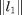
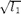
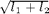
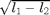
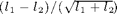

KOETHEDGE - Edge and junction detection with an improved structure tensor.
Contents
Description
Implements the edge/corner detector based on the boundary tensor estimated from the gradient structure tensor (GST) as suggested and in Koethe's papers [Koth03a,Koth03b,Koth06].
Syntax
[emap, cmap] = KOETHEDGE(I); [emap, cmap, T] = KOETHEDGE(I, rho, sigma, 'Property', propertyvalue, ...);
Inputs
I : an input image with size (X,Y,C), where C>1 when I is multichannel.
rho : post-smoothing width; this parameter sets the integration scale for spatial averaging, that controls the size of the neighbourhood in which an orientation is dominant; it is used for averaging the partial directional derivatives of the tensor with a Gaussian kernel; if rho<0.05, then no smoothing is performed; default: rho=1.
sigma : pre-smoothing width; this parameter sets the differentiation scale in the case the image is smoothed prior to the differentiation through Gaussian filtering; sigma typically controls the size of the objects whose orientation has to be estimated; default: sigma=1, i.e. Gaussian regularisation is used for estimating the derivatives.
Property [propertyname propertyvalues]
'der' : string defining the method of pre-smoothing/differentiation used for estimating the directional derivatives of the input image; it is either (see GRDSMOOTH): 'matlab', 'vista', 'fast', 'conv', 'fleck', 'tap5', 'tap7', 'sob', 'opt' or 'ana'; default: der='fast'.
'int' : string defining the method used for the post-smoothing of the GST; it is either (see GRD2GST): 'matlab', 'conv' or 'fast' for isotropic Gaussian smoothing, or 'ani' for anisotropic Gaussian (using hour-glass shaped Gaussian kernels) along the edges; this latter better captures edges anisotropy; default: int='fast'.
'map' : string defining the Canny-like algorithm used for extracting edges from the gradient-like vector derived from the first eigenvector of the GST; it is either:
- 'canny' for standard hystheresis + non-maximum suppression following Canny algorithm [Canny86],
- 'rothwell' for subpixel approach of [RMHN95];
default: map='rothwell'.
'samp' : to perform (* samp) interpolation of the estimated gradient to avoid aliasing (samp=2 is suggested in [Koth03a]); default: samp=1.
'low' : unique threshold value used by the Rothwell technique (ie. when map='rothwell'); typical range of values is [3,18]; default: low=5.
'a' : parameter used for map='rothwell'; typical range of values is [0.8,0.95]; default: a=0.8.
'eign' : optional string defining the method used for the tensor's norm approximation when map='canny'; it is either:
- 'abs' for the absolute value of the first eigenvalue: ,
- 'zen' (or 'l1') for the square root of the largest eigenvalue: ,
- 'sap' (or 'sum') for the sum of the eigenvalues: ,
- 'koe' (or 'dif') for the difference of the eigenvalues: ,
- 'ndi' for the normalized difference of the eigenvalues: ;
default: eign='koe' (see also GRD2GST).
'hyst' : vector [low high] setting the low and high hystheresis threshold values with 0<=low<high<1 used when map='canny'; default: hyst=[], and the threshold values are chosen automatically (see EDGE) or using the ratio variable below.
'radius' : size of the neighbourhood used for local maxima detection; default: radius=3.
Outputs
emap : logical edge map.
cmap : logical corner map.
T : optional variable storing the GST estimated through the calculation.
References
[Canny86] J.F. Canny: "A computational approach to edge detection", IEEE Trans. on Pattern Analysis and Machine Intelligence, 8(6):679-698, 1986. http://ieeexplore.ieee.org/xpls/abs_all.jsp?arnumber=4767851&tag=1
[RMHN95] C. Rothwell, J. Mundy, B. Hoffman and V.-D. Nguyen: "Driving Vision by Topology", Proc. International Symposium on Computer Vision, pp. 395-400 - Techn. report 2444, INRIA, 1995. http://ieeexplore.ieee.org/xpls/abs_all.jsp?arnumber=477034&tag=1
[Koth03a] U. Kothe: "Edge and junction detection with an improved structure tensor", Proc. of DAGM Symposium, LNCS 2781, pp. 25-32, Springer, 2003. http://hci.iwr.uni-heidelberg.de/Staff/ukoethe/papers/structureTensor.pdf
[Koth03b] U. Kothe: "Integrated edge and junction detection with the boundary tensor", Proc. ICCV, vol. 1, pp. 424-431, 2003. http://hci.iwr.uni-heidelberg.de/Staff/ukoethe/papers/polarfilters.pdf
[Koth06] U. Kothe: "Low-level feature detection using the boundary tensor", in "Visualization and Processing of Tensor Fields", Series on Mathematics and Visualization, pp. 63-79, Springer, 2006. http://hci.iwr.uni-heidelberg.de/Staff/ukoethe/papers/tensorsDagstuhl.pdf
See also
Related: EDGECORNER, CORNER, CANNYEDGE, CANNYEDGEPROD, CANNYEDGEMAP, SDGDEDGE, CONGRUENCYEDGE, COMPASSEDGE, ANISOEDGE, ELDERZUCKEREDGE, PETROUEDGE, ROTHWELLEDGE, HARRISCORNER, SUSANCORNER, FASTCORNER, FASTCPDA. Called: KOETHEDGE_BASE.
Function implementation
function [emap, cmap, varargout] = koethedge(I, varargin)
parsing parameters
error(nargchk(1, 25, nargin, 'struct')); error(nargoutchk(1, 3, nargout, 'struct')); if ~isnumeric(I) error('koethedge:inputerror','matrix required in input'); end p = createParser('KOETHEDGE'); p.addOptional('rho', 1, @(x)isscalar(x) && isfloat(x) && x>=0); p.addOptional('sigma', 1, @(x)isscalar(x) && isfloat(x) && x>=0); % other optional inputs p.addParamValue('der', 'fast', @(x)islogical(x) || (ischar(x) && ... any(strcmpi(x,{'matlab','vista','fast','conv','fleck', ... 'tap5','tap7','sob','opt','ana'})))); p.addParamValue('int', 'fast', @(x)islogical(x) || (ischar(x) && ... any(strcmpi(x,{'matlab','conv','fast','ani'})))); p.addParamValue('map', 'rothwell', @(x)ischar(x) && ... any(strcmpi(x,{'canny','rothwell'}))); p.addParamValue('samp', 1, @(x)isscalar(x) && round(x)==x && x>=1 && x<=5); p.addParamValue('radius', 3, @(x)isscalar(x) && round(x)==x && x>0); p.addParamValue('eign',[],@(x)ischar(x) && ... any(strcmpi(x,{'abs','zen','l1','sap','sum','ndi','dif','koe'}))); p.addParamValue('hyst', [], ... @(x)isvector(x) && length(x)<=2 && all(x>=0) && all(x<1)); p.addParamValue('low', [], @(x)isscalar(x) && x>=0 && x<=20); p.addParamValue('a', [], @(x)isscalar(x) && x>=0 && x<=1); % parse and validate all input arguments p.parse(varargin{:}); p = getvarParser(p);
checking/setting parameters
switch p.map case 'canny' if ~(isempty(p.low) && isempty(p.a)) warning('rothwelledge:inputwarning',... ['incompatible ''low'' and ''a'' with map=''canny''' ... ' - parameters ignored']) end if isempty(p.eign), p.eign = 'koe'; end v1 = p.eign; v2 = p.hyst; case 'rothwell' if ~(isempty(p.eign) && isempty(p.hyst)) warning('rothwelledge:inputwarning',... ['incompatible ''eign'' and ''hyst'' with map=''rothwell''' ... ' - parameters ignored']) end if isempty(p.low), p.low = 5; end if isempty(p.a), p.a = 0.8; end v1 = p.low; v2 = p.a; end
main computation
[emap, cmap, T] = ... koethedge_base(I, p.rho, p.sigma, p.der, p.int, p.map, ... p.samp, v1, v2, p.radius); if nargout==3, varargout{1} = T; end
display
if p.disp figure, colormap gray subplot(1,2,1), imagesc(emap), axis image off, title('GST-base edge map'); subplot(1,2,2), imagesc(cmap), axis image off, title('GST-base corner map'); end
end % end of koethedge